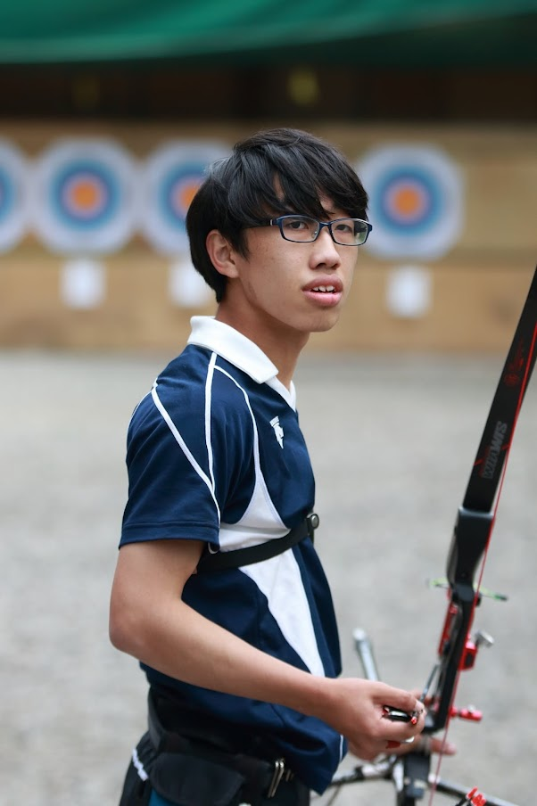

第20回目の今回は理学部生命科学科の岡田直純くんです。アーチェリーの魅力や、こだわりについて話してくれました。
うちの生命科学科は、人数が約50人と少ないうえ、必修科目が多くおなじ学科の人達での関わりが必然的に多くなります。だからこそ学科で友達を作りやすく楽しい大学生活を送ることが出来ます。実際オンライン授業が多かった今年でも友達を沢山作ることが出来ました。先ほどにも述べた通り必修科目が多いためアドバイスといえるようなアドバイスはありません。テストに関しては、生化学は毎年単位を落とす人が何人かいるのでしっかり勉強しておくのがオススメです。
自分の場合は高校のときからアーチェリーをやっていて今までやってきたスポーツのなかで一番自分に向いていると感じたため、大学でも続けて更に上手くなりたいと思ったからです。また、高校のときのアーチェリー部の友達も続けているということも理由の１つです。
高校の頃は両立できていたものの、大学では課題が増え授業内容も難しくなり教職課程も取っているため、両立が厳しくなっているのが正直なところです。でもなるべく両立させるため毎週土日を練習の時間にして、授業の合間の時間や早めに授業が終わったらその後の時間を自主練に費やします。
アーチェリー部の魅力は色々ありますが、一番は何といっても雰囲気が良いところです。集中している時は静かになるものの、試合等で選手が良い当たりをすると全員で盛り上がったり応援の声もたくさん聞こえます。その雰囲気の良さから普段の練習でも射ち方の悪いところや良いところを教え合ったりして互いの実力の向上が出来ます。
自分の弓具は、WIN＆WINという会社の最新作のmetadxという弓具であり、黒と赤を基本とした色で揃え自他ともに認めるかっこよさであるということです。
ご入学おめでとうございます。今年もコロナが収まりをみせないためコロナ禍以前と同じようにいかず苦労もあると思いますが学業も頑張り楽しいキャンパスライフを送りましょう！！
いかがだったでしょうか。弓具は自分でパーツを決めることができるため、自分の弓にはこだわりを持っている人が多いです！ぜひ岡田くんのかっこいい弓を見に来てください！次回は法学部政治学科の佐藤花菜さんです！